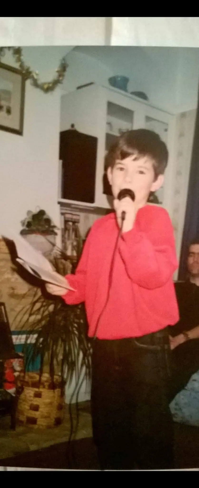

When people think about the role of a Chief Compliance Officer, they imagine regulators, board meetings, audits, enforcement actions and complex financial-crime risks. Those things are part of the job. But they are not the part that keeps me awake at night.
The greatest responsibility is human
The greatest responsibility I carry is not regulatory. It is human.
Every morning, I know that hundreds of people around the world are relying on the culture my leadership team and I create. They trust us to give them purpose, direction, psychological safety and the opportunity to do the best work of their careers.
That can feel heavier than any regulatory examination.
People often ask what is hardest about being a Chief Compliance Officer. Most expect the answer to be regulators, audits, board pressure or personal accountability. Those things matter. But what weighs on me most is wondering whether the people in my organization enjoy coming to work, understand the mission, know why their work matters and feel safe enough to ask difficult questions.
Growing up gay taught me to read the room
Like many gay people of my generation, coming out was never a single event.
You come out constantly: to every new team, every new boss, at every customer dinner, conference and social event. You become skilled at finding a natural way to mention your husband rather than making an announcement that begins, “I’m gay.” It sounds small. It can also be exhausting.
I grew up in Ireland during the 1980s and 1990s, when homosexuality was still criminalized. It was decriminalized in 1993, but society did not transform overnight.
As a flamboyant child, I had a choice: change almost everything about myself or lean into who I was. I leaned in. Humor and quick wit helped me diffuse uncomfortable situations, make people laugh and build connection quickly.
At the time, that was probably a form of survival. Looking back, I was also developing skills I would later use as an executive.


Growing up gay taught me how to read a room, build rapport and communicate with care. Leadership taught me how to use those skills to build trust, make complexity clear and create teams where people feel safe enough to execute.
I became quieter when I became more senior
One of the biggest surprises of becoming a Chief Compliance Officer was that, for a while, I became quieter.
The more senior I became, the more I worried about how an executive was supposed to behave. I found myself surrounded by people who were older or more experienced, and I started second-guessing instincts that had served me well throughout my career.
People who had worked with me for years began asking why I had not spoken up, challenged a decision or said what I clearly believed.
The truth was that I was trying to become the version of an executive I thought I was supposed to be.
What I needed was not a new voice. I needed permission to use my own.
Leaders need psychological safety too
We often talk about the responsibility leaders have to create psychological safety for their teams. We talk less about the fact that leaders need it as well.
I was fortunate to have strong leaders around me who created that safety. They encouraged challenge, welcomed different opinions and gave me room to be wrong, change my mind and speak honestly. Their trust gave me the confidence to stop performing an imagined version of executive leadership and bring more of myself into the role.
I began to understand that presenting to a board, explaining a difficult risk or making the case for additional funding is a form of performance—but not performance for its own sake. It is translation. You take something technical, complex or frankly boring and help people understand why it matters and what they need to do next.
Success is becoming less necessary
When I first built my leadership team, they needed me constantly. There were frequent questions, approvals, check-ins and escalations. I probably leaned into micromanagement more than I would like to admit because I was new at that level and wanted everything to go the right way.
Over time, trust changed the dynamic.
My leaders began solving problems together, building relationships across the organization, speaking directly with customers and banks, and advocating for what they needed without asking me to do it because the other executive happened to be my peer.
Watching that group grow into exceptional compliance leaders has been one of the most satisfying experiences of my career.
There is also a slightly terrifying realization that comes with it: if I disappeared tomorrow, they would be okay.
That is success.
Leadership is not about making yourself indispensable. It is about building people who no longer need you in every room.
Being wrong is part of the job
Executive confidence does not come from always being right.
I have insisted on working with vendors that did not ultimately work because I underestimated the technical complexity of integration. I have made policy decisions that created business impact because I did not listen closely enough to the feedback around me. I have handled meetings badly and received direct feedback from my team about how I communicated or how a situation made them feel.
I am grateful they told me.
If the people closest to a leader cannot say, “You handled that badly,” “I disagree,” or “You are wrong,” that leader has built authority rather than trust.
Those are not the same thing.
What I hope people carry with them
If someone works with me for five minutes or five years, I hope they leave with something they did not have before.
Maybe it is knowledge. Maybe it is confidence, motivation or greater clarity. Maybe it is simply the feeling that they mattered—that their question was important, their contribution was appreciated and their presence made a difference in that moment.
Today, there is much less separation between the personal version of me and the professional one. They have gradually become the same person.
Becoming comfortable with that may have been the most important leadership lesson of all.
Continue the conversation. For speaking, media or advisory enquiries, contact Micheal.